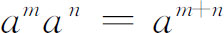
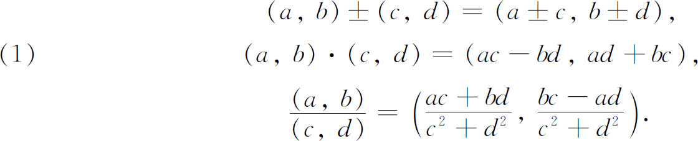

在复数的运算中引进来的特殊性质，哈密顿把它组织在以有序偶作运算的定义中。例如，设a＋bi和c＋di是两个复数，则
在复数的运算中引进来的特殊性质，哈密顿把它组织在以有序偶作运算的定义中。例如，设a＋bi和c＋di是两个复数，则1．关于型的永恒性的代数基础
伽罗瓦关于可用代数步骤求解的方程的工作结束了代数的一章，虽然他引进了诸如群和有理整环（域）等概念（它们将结出果实），但这些概念的充分开发必须等待其他概念的发展。下一个重要的代数创造，由哈密顿所创始，揭开了全新的领域，打破了对于“数”所必须遵循的规则的古老信念。
为了评价哈密顿工作的独创性，我们必须考察在19世纪前半期所普遍理解的普通代数的逻辑。1800年，数学家们自由地使用各类实数以至复数，但是既没有这些不同类型的数的精确定义，也没有关于数的运算的任何逻辑检验。对这种情况不满的表示是很多的，但被淹没于代数和分析的大量新创造中。最大的不安似乎产生于下述事实：使用文字时就好像它们具有整数的性质，然而当文字被任何数代替时这些运算的结果却都有效。由于各种类型的数的逻辑没有建立，所以不可能理解它们具有同正整数相同形式的性质，从而不可能理解只代表任一类实数或复数的文字表达式必然具有相同的性质———即通常的代数恰是一般化的算术。似乎文字表达式的代数具有自己的逻辑，它说明文字表达式的有效性和正确性。因此在18世纪30年代数学家们就着手解决用文字或符号表达式进行运算的正确性问题。
这个问题首先被剑桥大学的数学教授皮科克（1791—1858）考虑到。为了说明用文字表达式进行运算的正确性，这些表达式要能代表负数、无理数和复数，他区分了算术代数和符号代数。前者是处理表示正整数的符号，所以有坚实的基础。这里仅有导致正整数的运算才被允许。符号代数采用算术代数的规则，但取消限于正整数的限制。在算术代数中推出的全部结果与符号代数中的结果都一样；但算术代数中的表达式在形式上是普遍的，在值上是特殊的，而符号代数中的表达式，在值上和在形式上都是普遍的。例如，在算术代数中

是正整数时成立，因而在符号代数中它对所有m和n都成立。同样地，（a＋b）n当n是正整数时的级数，如果用不带末项的一般形式来显示，就对所有n成立。皮科克的论证被称为型的永恒性原理。这个原理的明白的叙述，见于皮科克的《关于分析的某些分支的新近成就和现状的报告》（Report on the Recent Progress and Present State of Certain Branches of Analysis）(1)，在其中他不仅作了报告，而且还作了武断的肯定。关于符号代数，他说：
1．符号在值和表现上都是无限的。
2．无论是什么符号，在它们上作运算，对所有情况都能进行。
3．符号组合的法则属于这样一类法则，即当符号是算术量时，且当它们所受到的运算用算术代数中同样的名字来称呼时，它与算术代数的法则普遍符合。
从这些原理出发，他相信他能推出型的永恒性原理：“无论什么代数的型，当符号在形式上是普遍的，而在值［正整数］上是特殊的时候是等价的，则当符号在值上和形式上都是普遍的时候同样是等价的。”皮科克特地用这个原理证明用复数运算是合理的。他试图用“当符号在形式上是普遍的时候”来保护他的结论。这样就不能在符号形式中陈述特殊整数的特定性质以及坚持这些符号的陈述是普遍的。例如，复合整数分解成素数的乘积，虽然是用符号表达的，却不能作为符号代数的陈述来接受。这个原理用命令来批准经验上显然正确但尚未在逻辑上建立的东西。
皮科克在他的《代数论著》（Treatise on Algebra）(2)的第二版中重新肯定了这个原理，但他还在那里引进了正式的代数科学，皮科克在这本论著中叙述说，代数和几何一样，是演绎的科学。代数的步骤必须根据法则条文的一个完全的陈述，这些法则支配着步骤中用到的运算。至少对于代数这门演绎科学而言，运算的符号除了法则给以它的意义而外没有其他意义。例如加法不过是表示服从代数中加法法则的任一步骤。他的法则是，例如加法和乘法的结合律和交换律，以及如ac＝bc而c≠0，则a＝b这个法则。
这里型的永恒性原理是从所采用的公理推出来的。这种处理方式为代数中更抽象的思想铺平了道路，尤其是影响了布尔（George Boole）关于逻辑代数的思想。
经过19世纪大部分时间，由皮科克肯定的代数观点被接受了。这个观点受到例如邓肯·格雷戈里（Duncan F．Gregory，1813—1844）的支持，他是17世纪的詹姆斯·格雷戈里的重重孙。邓肯·格雷戈里在一篇文章《论符号代数的真正性质》（On the Real Nature of Symbolical Algebra）(3)中写道：
于是，我用以考虑符号代数的见解是，它是处理运算的组合的科学，这些运算不是由它们的性质确定的，即不是由它们是什么或它们做什么来确定的，而是由它们所服从的组合的法则来确定的……的确，这些法则在很多情况下已由数的许多已知运算法则提出来了（正如皮科克先生已经适当地称谓的），但是从算术代数到符号代数所取的步骤是，不考虑我们用符号所代表的运算的性质，而假设服从同样法则的一类未知运算的存在。这样我们就能够证明不同的运算类之间的某些关系，当这些运算在符号之间表达出来时，它们就称为代数定理。
在这篇文章中，邓肯·格雷戈里强调了交换律和分配律，这术语是由塞尔瓦（François-Joseph Servois，1767—1847）(4)引进的。
代数理论作为符号及其组合法则的科学进一步由德摩根推进，他写了几篇关于代数结构的文章(5)。他的《三角学和双重代数》（Trigonometry and Double Algebra，1849）也包含着他的见解。双重代数这个词的意思是复数的代数，而单个代数是指负数。在单个代数以前是普通算术，它包括正实数的代数，德摩根主张代数是无意义的符号以及符号的运算的集合。符号是0，1，＋，-，×，÷，（）（）和文字。代数的法则就是这些符号所服从的法则，例如交换律，分配律，指数律，负数乘正数是负数，a-a＝0，a÷a＝1，和一些导出法则。基本法则是任意选择的。
19世纪中叶，普遍接受的代数公理是：
1．等量各加上第三个量得到等量。
2．（a＋b）＋c＝a＋（b＋c）。
3．a＋b＝b＋a。
4．等量加等量给出等量。
5．等量加不等量给出不等量。
6．a（bc）＝（ab）c。
7．ab＝ba。
8．a（b＋c）＝ab＋ac。
型的永恒性原理就建立在这些公理上。
对于我们来说，要看出这个原理究竟是什么意思是困难的。它把未经证明的东西作为假定来论证为什么不同类型的数具有与整数相同的性质。但皮科克、邓肯·格雷戈里和德摩根企图从代数中建立一门科学，与实数和复数的性质无关，从而认为代数是不加解释的符号和它们的组合法则的科学。实际上是要使这一假定合理化，即同样的基本性质对所有类型的数都具备。这个基础不仅是含糊的，而且是僵硬的。人们坚持算术代数和一般代数之间的相似性是如此僵硬以至于如果再继续下去，就要破坏代数的一般性。他们似乎未体会到，一个公式对符号的一种解释是对的，但对另一种解释可能不对。
型的永恒性原理是一种任意的宣言，不可能作为代数的牢固基础。实际上，我们在这一章中将要处理的事物都伤害了它，第一步是由哈密顿做出的，在他把复数的逻辑建立在实数性质的基础上的时候，这第一步只是在涉及复数时避免了对这个原理的需要。
虽然在1830年时，复数在直观上被很好地建立了，这是通过表示成平面上的点或有向线段来建立的，但哈密顿关心算术的逻辑，他不满足于只是直观的基础。哈密顿在他的文章《共轭函数及作为纯粹时间的科学的代数》（Conjugate Func-tions and on Algebra as the Science of Pure Time）(6)中指出，复数a＋bi不是2＋3意义上的一个真正的和，加号的使用是历史的偶然，而bi不能加到a上去。复数a＋bi只不过是实数的有序偶（a，b）。由i或在复数的运算中引进来的特殊性质，哈密顿把它组织在以有序偶作运算的定义中。例如，设a＋bi和c＋di是两个复数，则

通常的结合律、交换律和分配律现在都能推导出来。在对复数的这个看法下，不仅这些数逻辑地建立在实数的基础上，而且至今还有点神秘的也完全免除了。当然，在实践上，用a＋bi这个形式并记住 还是方便的。附带地说一下，高斯在1837年给波尔约（Wolfgang Farkas Bolyai）的一封信中确实说过，他在1831年就已经有了有序偶的概念。但是哈密顿文章的发表才给了数学界以有序偶的概念。
还是方便的。附带地说一下，高斯在1837年给波尔约（Wolfgang Farkas Bolyai）的一封信中确实说过，他在1831年就已经有了有序偶的概念。但是哈密顿文章的发表才给了数学界以有序偶的概念。